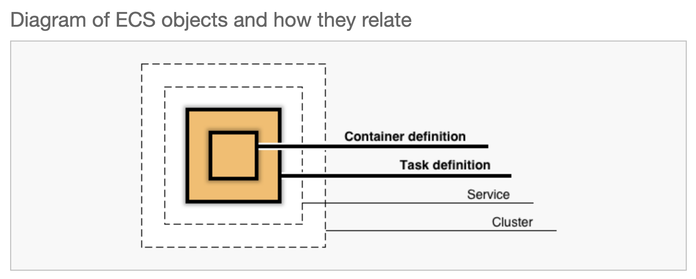
Using Fargate will hide a lot of complexity, especially with privisioning the underlying EC2 instances.
Lets start by getting to ECS.
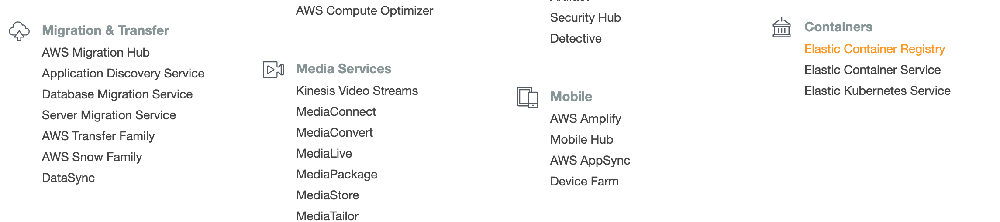 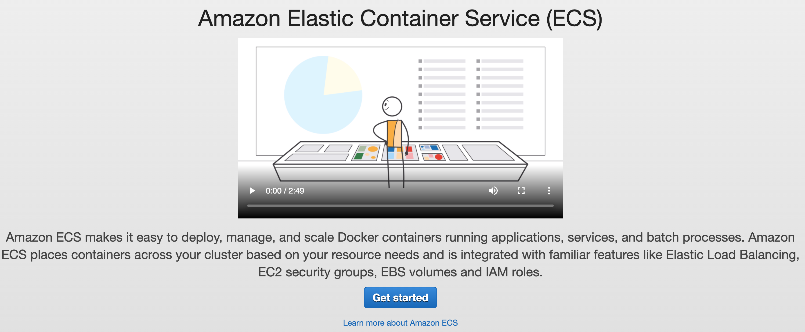
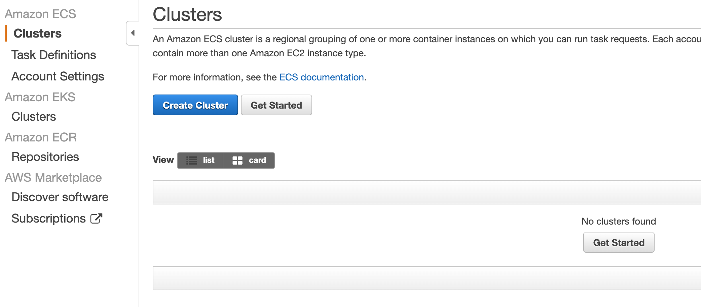
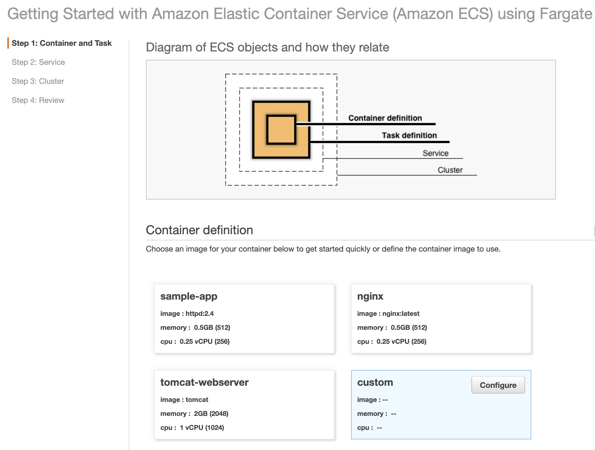
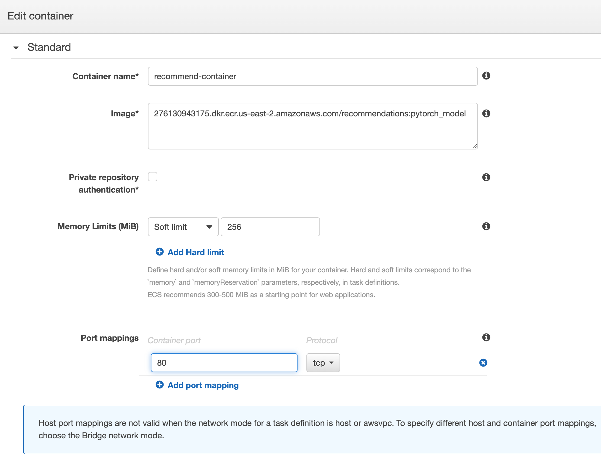
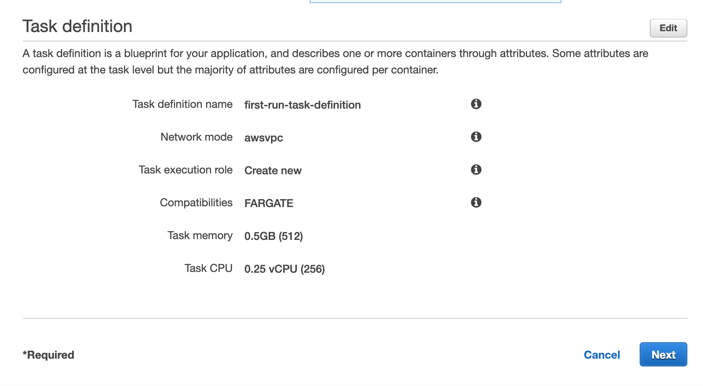
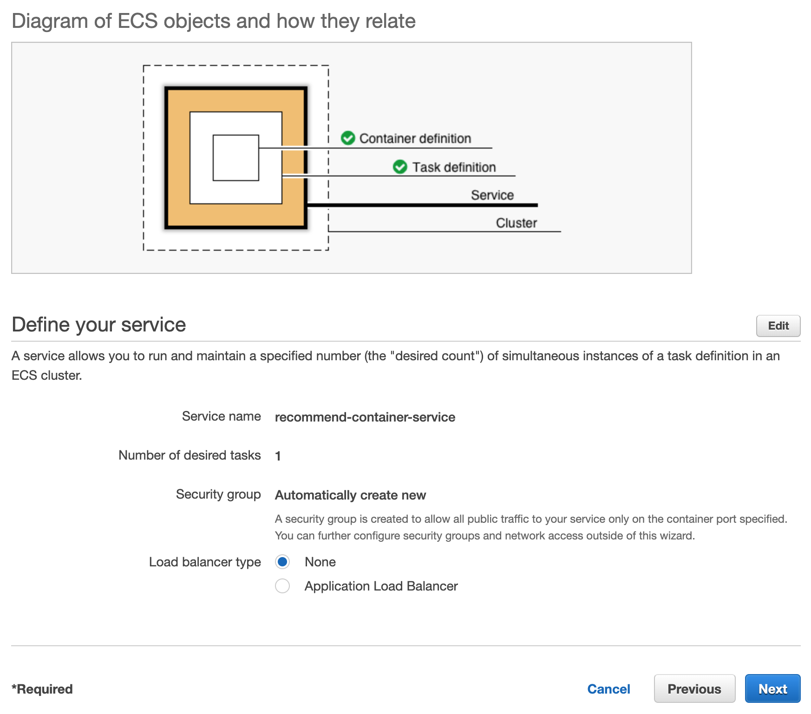
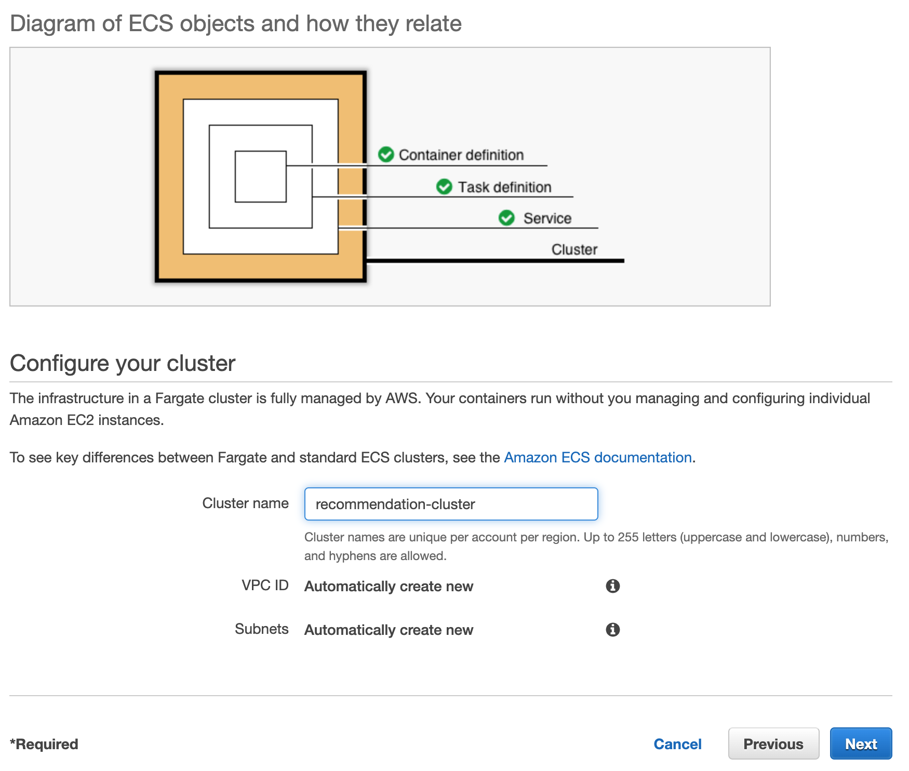
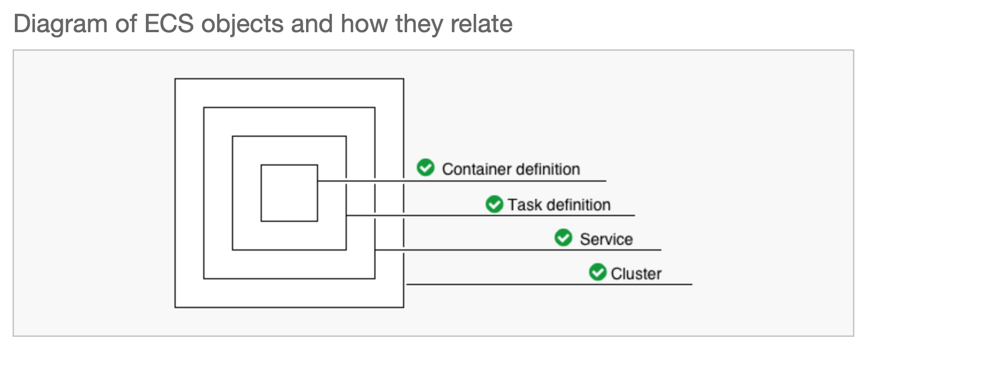 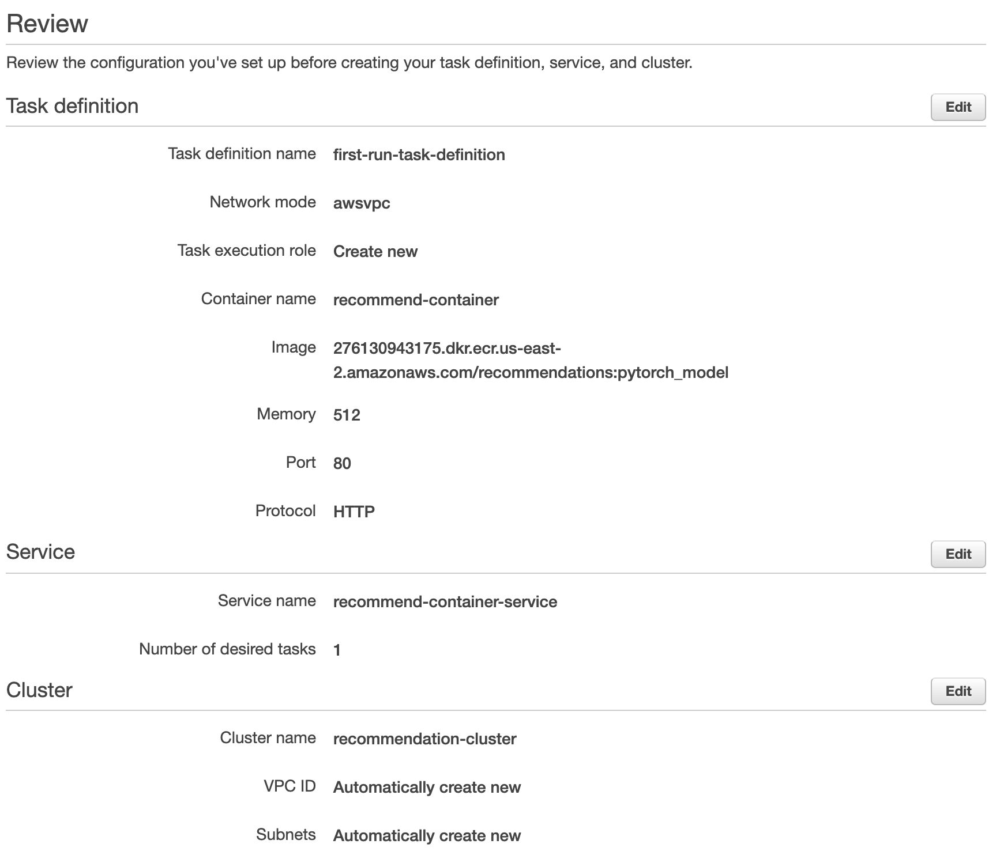
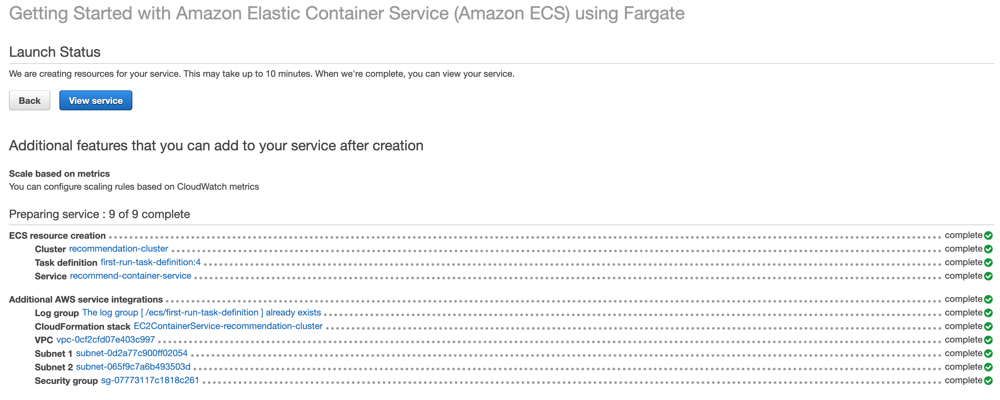
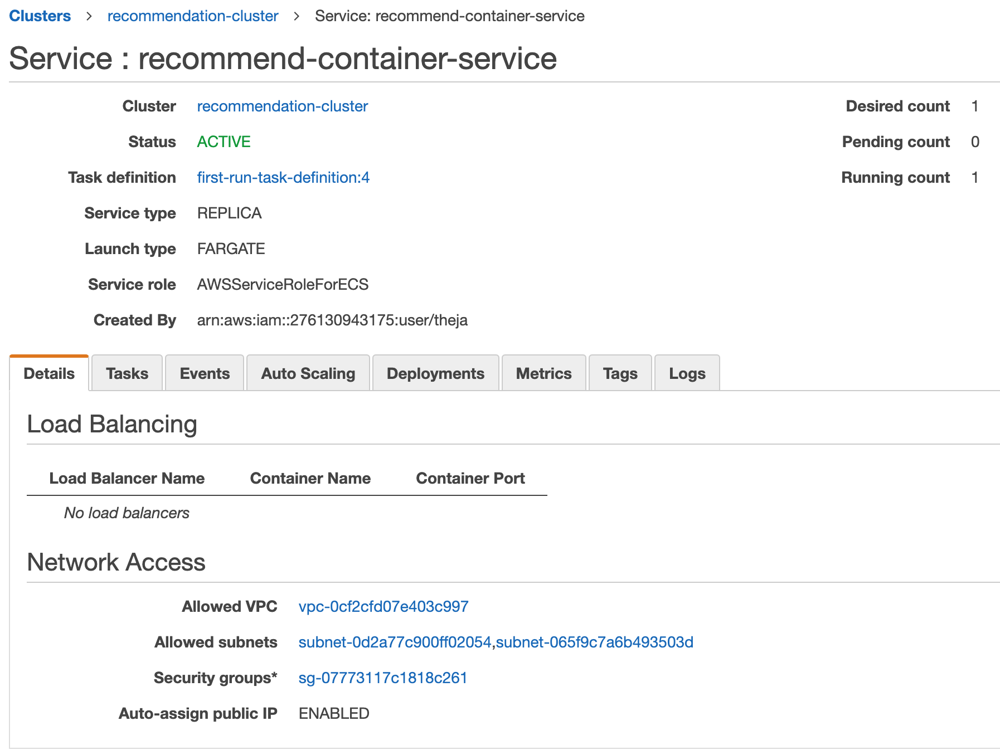
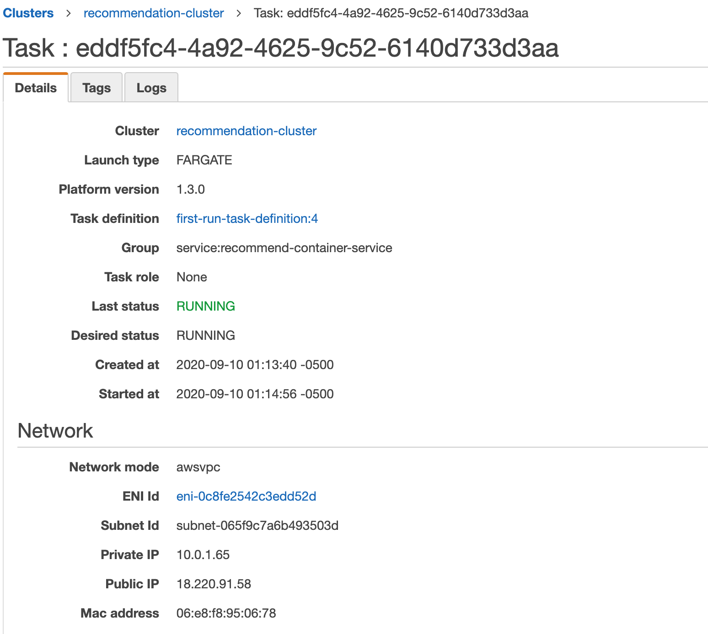
http://18.220.91.58/?uid=20
gives the following response.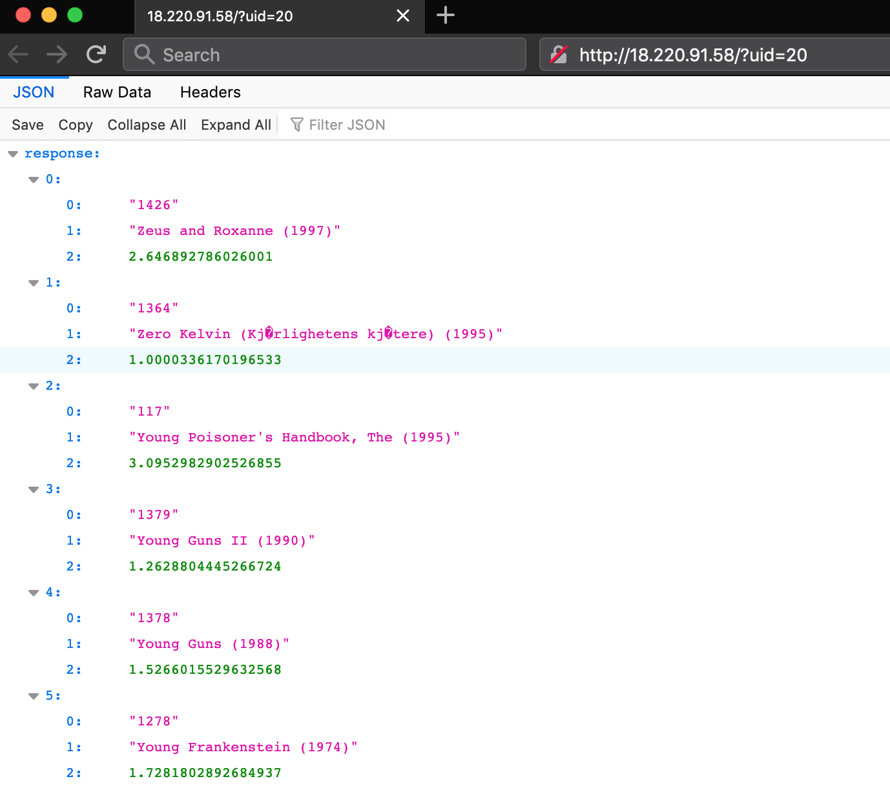